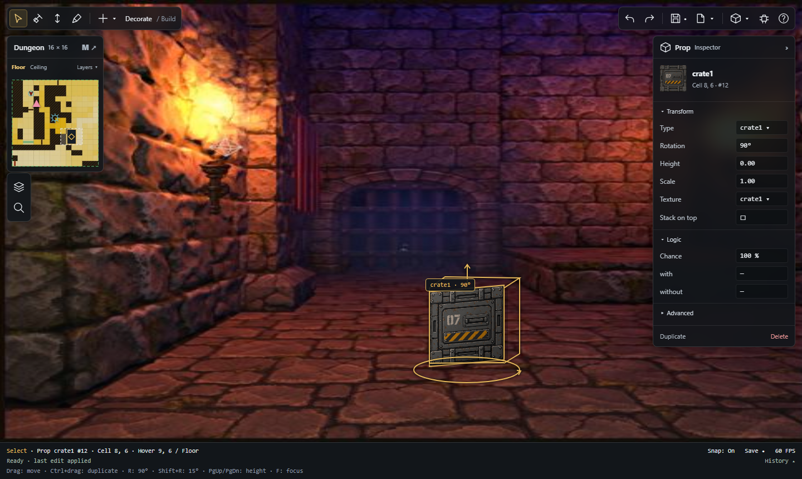
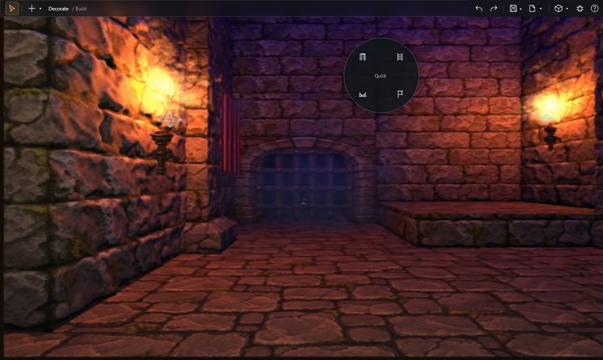
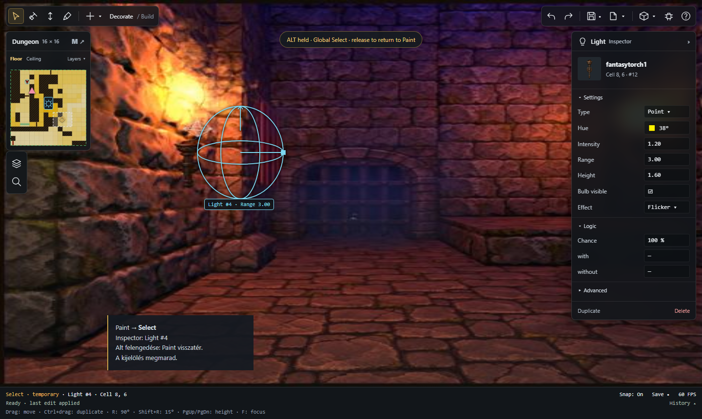
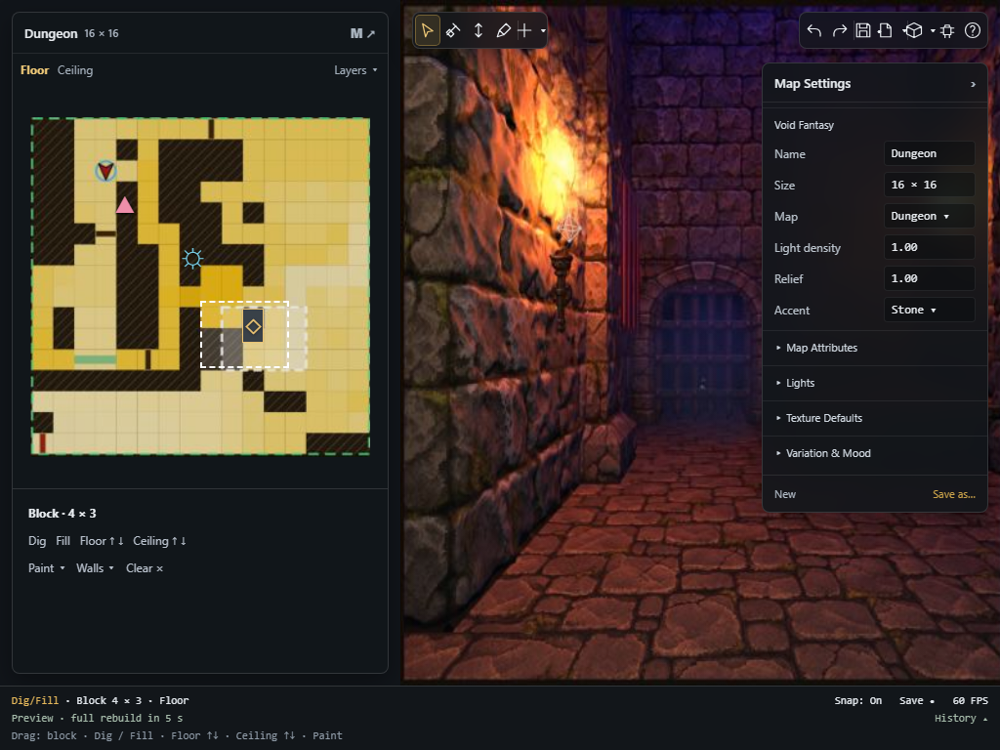

A · Lebegő csoportok · AJÁNLOTT
Balra eszközök, jobbra fájl és nézet. A közép szabad; a helyek stabilak, az aktív eszköz mindig látszik. Illeszkedik a tulajdonosi irányhoz.
Kompakt, játékon belüli level editor. Ajánlás: lebegő ikonok és visszahúzható panelek. A munkafelület a tér; a kezelőszervek a következő műveletet segítik.

Select / Dig / Height / Paint külön; egy asset választása Place módot aktivál.
A sötét szürke mindkét világban használható. Az arany megtartja a játék karakterét; a kategóriaszínek külön a kijelölést jelzik.
A mockupok statikus javaslatok. A további oldalak TERV jelölése a jelenlegi engine-hez képest új funkciót jelent; nincs forráskódmódosítás.
Mindhárom ugyanazt a parancskészletet éri el. Az ajánlott megoldás nem foglalja el egy tömör fejléccel a teljes felső szélt.
Balra eszközök, jobbra fájl és nézet. A közép szabad; a helyek stabilak, az aktív eszköz mindig látszik. Illeszkedik a tulajdonosi irányhoz.
Könnyen megtanulható és kiszámítható. A teljes szélességben állandó vizuális határ marad, ezért kevésbé légies.

A ritka parancsok radiális menüben. TERV: jobb kattintás nyitná, de ez ütközik a meglévő Orbit / Fill művelettel. Csak opcionális alternatíva; nem az ajánlott alap.
Aktív eszköz + Save • mindig látható. A többi ikon 70% erősségű; hover / fókusz 100%, tooltip 500 ms után. A célterület nem tűnik el.
File: New, Load, Save, Download, Shared Maps, Exit. Place: Door, Ladder, Bridge, Chance wall, Start, Exit, Restricted. Save as: Map Settings.
View: Textured, Faces, Wireframe, Normals, Depth. Debug külön fiók: Graphics, normal/metal/glow/AO, Stats, Play & Testing, Save to map. Save: devben lemez, máshol letöltés.
1440 × 860 · Select alapértelmezés. A fa csukva, a prop Inspectora nyitva. A láda a valódi crate1 diffuse-textúrájából készült illusztratív kompozit.
256 px, 12 px perem; a kijelölést követi, üres kijelölésnél Map Settings. Becsukás / pin / auto-hide: TERV.
Arany size-doboz, egy yaw-gyűrű és magasságnyíl. A gyűrű 15° / 90° lépésekben forgat; a testen indított húzás a padlón mozgat.
Kézi csukás módonként megmarad. Csak nem rögzített panel bújhat el viewport-műveletkor. Fókusz és mezőszerkesztés alatt nyitva marad; az oldalsó fül visszahozza.
1440 × 860 · Balra 40% nagy minimap, a fa elbújik. Jobbra 3D ellenőrzés és keskeny Inspector. M vagy a nagyítás ikon vált vissza Decorate módba.

Nagy minimap, húzott blokk, Dig / Fill / Floor / Ceiling / Paint és gyors lapos előnézet már létezik. A Place menü mindvégig elérhető.
Kategóriaszín + jelalak. Kattintás kijelöl, húzás cellát vált; NPC-útvonal, szemkapcsolók és nagy pályán pan / zoom a plan-v2 §10 szerint.
Preview · full rebuild in 5 s az utolsó módosítástól számol; utána Rebuilding, végül Ready. A mechanika már megvan, a látható állapot új.
TERV · Egy selection: { kind, index }. A Select a fő megoldás; Alt vagy tartott Q más eszközből ideiglenesen feloldja a kategóriavédelmet.

Paint → Alt le → Select → fény → Light Inspector. Alt fel → Paint; a kijelölés megmarad. Új javaslat: Escape a húzás előtti értékre állít vissza.
Legközelebbi találat; fedésnél NPC > item > prop > decal > light > surface. Place / Dig / Height nem fog meg véletlenül más fajtát. Alt: preventDefault, Q tartalék.
Ctrl+drag másolat. Shift+drag ajtót visz más cellába; Snap külön kapcsoló. R / Shift+R: 90° / 15°. Ctrl+Z/Y, F és M támogatás a terv szerint; a mezőben gépelés nem mozgat objektumot.
TERV · Valódi diffuse-bélyegképek, decalok, itemek és NPC idle-cellák. A fa a külön palettasorokat váltja ki; az Asset Manager megmarad.

Név + fajta; opcionális Active category. Alapból az aktív világ assetInWorld szűrése: Void Fantasy / Void Crew. Üres eredmény: No results + Clear filters.
A szem az elhelyezett réteget rejti a viewportban és a minimapon; adatot nem töröl. A paletta böngészhető marad, rejtett példány a viewportból nem jelölhető. Bővítés: Lights, Doors, Markers.
Kattintás → Place, dupla kattintás → Asset Manager. Textures kivétel: Paint, Wall / Floor / Ceiling / Default. Prop alcsoportok: 3D / Billboard / Pillar-Chamfer. A fa belül görgethető.
Mezők: plan-v2 §6. Az angol UI-nevek fordított címkék, nem igazolt API-azonosítók. A mintaszámok illusztratívak; az until alert blokk itt szándékosan nyitott.
Chance / with / without minden fajtánál azonos sorrendben. Hibás érték a mező mellett és a status message sorban is látszik. A változás a meglévő undo-folyamatot követi.
Advanced alapból zárt: NPC until alert: dormant / fooled / arrive, frequency / max. Door: Key, Hack, Code, Locked chance, Says. Particle: Blow speed / direction / tilt.
Decal: Surface, Position (px), Rotation, Action (terminal:
Saját, egységes SVG-vonalikonok külön fájlokban. Az ikon mellett csak menüben és tooltipben szükséges szöveg; a kiválasztott eszköz neve az állapotsorban is megjelenik.
24 × 24 px rajzrács; 1,6 px vonal; 20 px megjelenítés; 32 × 32 px desktop gomb; 44 × 44 px touch célterület.
Idle #d7e0ea; Active arany + kitöltés + keret; Focus 2 px világos külső gyűrű; Disabled 38% és indokló tooltip. Nem csak szín jelöl.
Angol accessible name, hover/focus tooltip, billentyűvel bejárható gombok. A menü Escape-re zár, fókusz visszatér a nyitó gombra; a viewport csak utána kapja vissza a billentyűket.
TERV · A szín a 3D körvonalon, a minimap ikonon és a fa kategóriaszegélyén azonos. A fali prop a Prop kategóriaszínét örökli; az elemfajtát a jelalak is azonosítja.
Size-doboz; egy yaw-gyűrű, magasságnyíl; padlón húzás.
Falsík-keret; falon húzás + magasságnyíl.
Felületi téglalap; sarokforgatás, felületen húzás.
Kis doboz; húzás és magasságnyíl.
Talpgyűrű + N/E/S/W nyilak; húzható útvonalpontok.
Égő + range-gömb; magasságnyíl + range fogantyú.
Jelölő; Blow-nyíl hegye: irány + dőlés.
Síkkeret; járat menti csúszka; Flip a panelen.
Padlósáv; kattintás → Name.
Sraffozott sáv; cellaszintű kapcsoló.
Padlósáv + irány; kattintás 90°.
Sáv; Chance / ID / with / without.
Élvonal; cella + oldal; nincs gizmo.
Sáv; cella + tengely; nincs gizmo.
Selected 2 px / 100% + 1 px sötét halo; hover 1 px / 45%. Csak az aktív elem kap fogantyút. A térbeli jelölés nem világít át a falon; minimapon továbbra is elérhető.
Látható pont 8 px; egér hit area 20 px, touch 44 px. Kamera-távolságtól független méret; ütköző fogantyúnál a közelebbi nyer.
Csak 3D prop kap egy yaw-gyűrűt. Decal sarokforgatás a felületen. NPC iránynyilai diszkrétek; a talpgyűrű nem forgató. Létra / híd: él / sáv, fogantyú nélkül.
Valódi 1024 × 768 renderelések. Fa alapból csukva, Inspector 232 px overlay; Buildben a nagy térkép 40%. Az állapotsor a napló legutóbbi üzenetét is megtartja.


66 px: 3 × 18 px + 12 px tér. 1: tool / selection / hover. 2: legutóbbi üzenet. 3: kontextusos gyorsgombok. Hosszú sor csonkolva; a teljes szöveg History-ban és tooltipben.
History: 200 sor, visszagörgethető. Hiba piros ikon + szöveg; nem kizárólag eltűnő toast. Debug külön fiók, nem keveredik az elemmezőkkel.
1024-en a fa nyitása becsukja a nem rögzített Inspectort. Menük egymást zárják; a panel a 3D fölött marad, belül görget. A fájlmenüben minden parancs elérhető.
TERV · Tablet / telefon landscape és portrait. Alsó 44 px-es eszközök, Inspector alsó lap, asset-fa oldalsó fiók. Buildben a térkép teljes képernyős.


Select gomb elsődleges. Hosszú nyomás: 450 ms, 8 px mozgásküszöb (új javaslat). Duplicate és Rotate külön művelet; Alt/Ctrl nélkül. Kijelölés után az alsó lap nyílik.
Egy ujj blokkjelölés, két ujj pan / pinch zoom. Viewport: egy ujj néz; Select alatt objektumról indulva húz. Kétujjas kameramozgás nem szerkeszt.
Portrait: összegzés vagy legfeljebb 55vh, belső scroll. Fa és Inspector felváltva nyílik. Safe-area padding; virtuális billentyűzetnél az aktív mező felgörgethető. Minden célterület ≥44 px.
A plan-v2 funkcionális döntései megmaradnak; a felső sáv vizuális formája a tulajdonosi irány alapján A ikoncsoportra változik.
Panel: 90% opacity, 12 px blur; toolbar: 82%. Border: white 14%; radius 8 px. Perem 12 px, belső tér 8-12 px, sor 32 px, gap 4-8 px.
Segoe UI: 13 px UI, 12 px mezőcímke, 11 px kiegészítő. Consolas: 11-12 px érték és status. Touch legalább 13 px. PDF: Arial.
Mindkét világban olvasható; 1024-en nem ütköznek a gombok; fókusz és aktív eszköz látszik. Rejtés nem töröl; hiba visszakereshető.
Meglévő a terv szerint: kategóriánkénti drag, Ctrl+C/V, nagy minimap + blokk, 5 s rebuild, Asset Manager, nézetmódok.
TERV: egységes selection, Select + Alt, kategória-körvonalak, fogantyúk, fa/kereső/szem-bővítés, 2D ikonréteg, status/history, touch és panel-átrendezés.
Új design-részlet: pin/auto-hide szabály, Escape rollback, touch küszöbök, hit area és paletta; prototípusban validálandó.
Később: többes objektumkijelölés és 3D Topdown (9. lépés). C radiális menü opcionális.
HTML/CSS/SVG forrás + PNG-k. Valódi shots/ háttér, public/ diffuse és CSS-sel kivágott NPC. A képek tervezési kompozitok, nem új 3D renderelések.